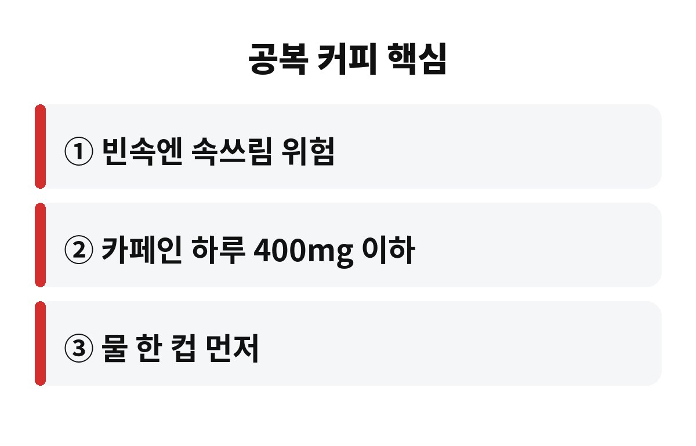
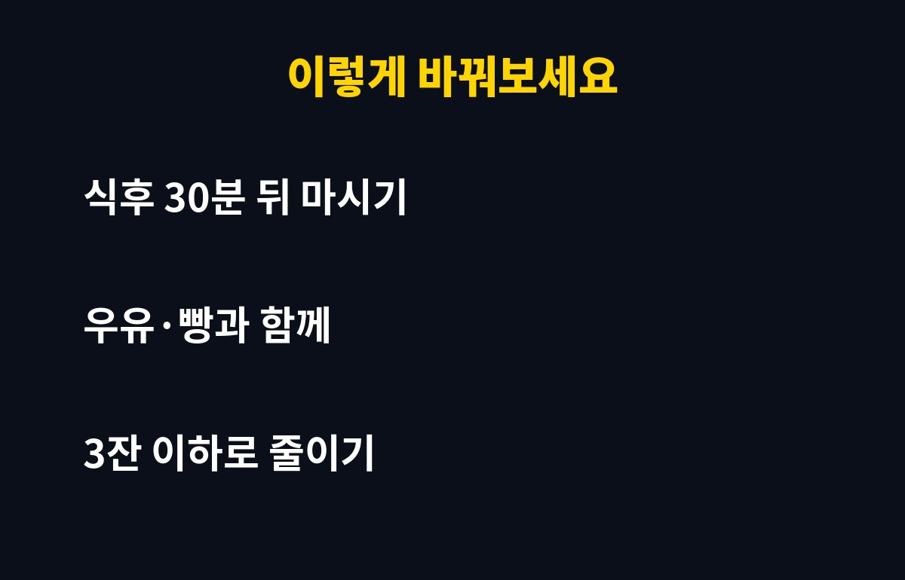

공복 커피는 사람에 따라 속쓰림과 더부룩함을 부르기 쉽고, 하루 카페인 섭취 권고량인 400mg(보통 커피 3~4잔)을 넘기면 위와 수면 모두에 부담이 커질 수 있어요. 아침마다 빈속에 커피부터 들이붓는 직장인이라면, 내 위는 지금 괜찮은 건지 궁금하시죠?
출근길에 커피 한 잔, 점심 뒤에 또 한 잔, 오후에 졸리면 한 잔 더. 이렇게 어느새 하루 3잔이 기본이 된 분들 많을 거예요. 오늘은 공복 커피가 정말 위에 나쁜지, 어떤 사람이 특히 조심해야 하는지, 습관을 어떻게 바꾸면 좋은지 편하게 풀어볼게요.
커피는 위산 분비를 자극하는 성질이 있어요. 음식이 들어가 있으면 위산이 음식과 섞이면서 부담이 덜한데, 빈속이면 위 점막이 그대로 자극을 받을 수 있죠. 그래서 공복 커피를 마신 뒤 속이 쓰리거나 울렁거린다는 분이 꽤 많아요.
물론 모든 사람이 똑같이 아픈 건 아니에요. 아무렇지 않게 매일 마셔도 괜찮은 분도 있고, 한 잔만 마셔도 속이 뒤집어지는 분도 있어요. 중요한 건 내 몸이 보내는 신호를 무시하지 않는 거예요. 공복 커피를 마신 뒤 반복해서 속이 불편하다면 그게 바로 신호랍니다.
보통 건강한 성인의 하루 카페인 섭취 권고량은 400mg 이하로 알려져 있어요. 커피 종류와 크기에 따라 다르지만 대략 아메리카노 3~4잔 정도에 해당해요. 문제는 커피에만 카페인이 있는 게 아니라는 점이에요. 에너지 음료, 녹차, 초콜릿, 일부 진통제에도 카페인이 들어 있어서 다 더하면 생각보다 금방 넘을 수 있어요.
임신 중이거나 심장이 두근거리는 분, 불면이 있는 분은 이 기준보다 더 적게 마시는 게 좋아요. 특히 오후 늦게 마신 커피는 몸속에 오래 남아서 밤잠을 방해하니, 공복 커피만큼 마시는 시간도 챙겨보세요.

피곤해서 커피를 마시는데, 오히려 커피 때문에 더 피곤해지는 악순환이 생기기도 해요. 카페인은 졸음을 잠깐 가려줄 뿐 피로 자체를 없애주지는 않거든요. 효과가 떨어지면 다시 피곤이 몰려오고, 또 마시고, 밤에는 잠이 얕아지고, 다음 날 더 피곤해지는 거죠.
공복 상태에서 마시면 심장이 두근거리거나 손이 떨리는 느낌을 받는 분도 있어요. 이런 반응은 사람마다 달라서 내가 예민한 편인지 먼저 알아두는 게 좋아요.
하나 더 있어요. 아침에 일어나자마자 마시는 커피는 이미 밤새 비어 있던 위에 곧바로 들어가는 거라, 점심 뒤 마시는 커피보다 자극이 크게 느껴질 수 있어요. 같은 한 잔이어도 언제 마시느냐에 따라 몸이 받아들이는 느낌이 달라진다는 뜻이죠. 그러니 내 속이 편한 시간대를 한 번 찾아보세요. 며칠만 기록해 보면 금방 보여요.
또 커피에 시럽이나 휘핑을 잔뜩 얹으면 당분과 열량까지 함께 늘어나요. 하루 3잔이 쌓이면 생각보다 무시할 수 없는 양이 되니, 가능하면 단맛은 줄이고 따뜻하게 천천히 마시는 쪽을 추천해요. 급하게 들이켜는 것보다 천천히 마실 때 속이 훨씬 덜 놀라거든요. 커피를 끊으라는 게 아니라 내 몸에 맞게 길들이자는 얘기예요.
| 상황 | 이렇게 해보세요 |
| 빈속에 마시면 쓰릴 때 | 물 한 컵과 가벼운 음식 먼저 |
| 하루 3잔 이상 마실 때 | 한 잔씩 줄이거나 디카페인 섞기 |
| 밤에 잠이 안 올 때 | 오후 늦게는 커피 피하기 |
가장 쉬운 방법은 커피 전에 뭐라도 먹는 거예요. 바나나 하나, 빵 한 조각, 우유나 두유 한 잔이면 충분해요. 그리고 커피 전에 물 한 컵을 먼저 마시면 속이 한결 부드러워지는 분이 많아요. 우유를 섞은 라테로 바꿔보는 것도 방법이고요.
그래도 속이 계속 쓰리거나 검은 변, 체중 감소, 반복되는 통증이 있다면 단순 커피 문제가 아닐 수 있어요. 이럴 때는 참지 말고 병원에서 상담을 받아보세요. 위염이나 역류성 식도염이 숨어 있는 경우도 있으니까요.

정리하면, 공복 커피는 무조건 나쁜 게 아니라 "빈속에, 너무 많이, 너무 늦게"가 문제예요. 여러분은 하루에 커피 몇 잔 드시나요? 댓글로 알려주세요. 도움이 되셨다면 구독해서 다음 건강 정보도 받아보세요!
※ 이 글은 일반적인 건강 정보이며 진단·치료를 대신하지 않아요. 증상이 계속되면 전문의 상담을 권장합니다.